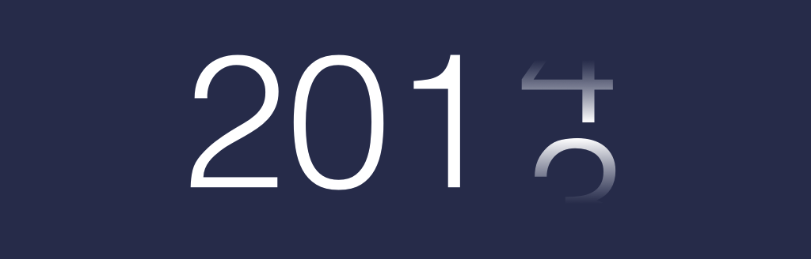

<!DOCTYPE html>
<html>
  <head>
    <meta charset="utf-8">
    <link href="http://nsmag.comquas.com/style/style.css" rel="stylesheet" type="text/css">
    <link href="http://mmwebfonts.comquas.com/fonts/?font=mon3" rel="stylesheet" type="text/css">
    <link href="http://cdnjs.cloudflare.com/ajax/libs/highlight.js/8.4/styles/default.min.css" rel="stylesheet" type="text/css">
    <link href="http://nsmag.comquas.com/style/tomorrow.css" rel="stylesheet" type="text/css">
    <script src="http://nsmag.comquas.com/js/highlight.pack.js"></script>
    <title>2013
    </title>
  </head>
  <body>
    <header class="siteheader content">
      <div class="siteheader-menu">
        <div class="site-header-logo"><a href="http://nsmag.comquas.com" class="logo">NSMag</a></div>
        <ul class="site-header-menu-list">
          <li><a href="https://itunes.apple.com/sg/app/nsmag/id641409847?mt=8">iOS</a></li>
          <li><a href="https://play.google.com/store/apps/details?id=com.comquas.nsmag&amp;hl=en">Android</a></li>
          <li><a href="http://nsmag.comquas.com/subscribe.html">Subscribe</a></li>
        </ul>
      </div>
    </header>
    <div id="detail" class="content">
      <h1>2013</h1>
      <div class="description">2013 တစ်နှစ်တာ</div>
      <div class="author">ရေးသားသူ : <span class="authorname">saturngod</span></div>
    </div>
    <div class="content detailArticle"><p>မင်္ဂလာ နှစ်သစ်ပါဗျာ။ 2013 ကုန်လို့ 2014 ကို ရောက်ရှိလာပါပြီ။ ကျွန်တော်တို့တွေ 2013 မှာ mobile နဲ့ ပတ်သကပ်ပြီးတော့ နည်းပညာ အပြောင်းအလဲ အချို့ ဖြစ်ခဲ့ပါတယ်။ 2013 တစ်နှစ်တာကို ပြန်လည် ကြည့်ရအောင်။</p>
<h2 id="ios-7-and-flat-design">iOS 7 and Flat Design</h2>
<p></p>
<p>2013 မတိုင်ခင်ကတည်းက flat design တွေ ခေတ်စားခဲ့ပါတယ်။ အထူးသဖြင့် 2013 မှာ ခေတ်တော်တော် စားတယ်လို့ ဆိုရမယ်။ Apple ရဲ့ iOS 7 က flat design လုံးဝ ပြောင်းသွားပါတယ်။ iOS 7 က flat ဖြစ်သွားတဲ့အတွက် iOS ရဲ့ app design တွေ app icons တွေ အကုန် flat ပုံစံ လိုက်ပြောင်းရတယ်။ iOS 7 ရဲ့ UI ကို မကြိုက်လို့ android ပြောင်းသွားတဲ့ သူတွေ ရှိသလို iOS 7 ရဲ့ UI ကို သဘောကျတဲ့ လူတွေလည်း ရှိကြတယ်။ 2013 မှာတော့ flat ui က ခေတ်စားခဲ့တာ တော့ အမှန်ပဲ။</p>
<h2 id="64-bits">64 bits</h2>
<p>iPhone 5s ကို 64 bits နဲ့ မိတ်ဆက်ခဲ့ပါတယ်။ mobile လောက တစ်ခုလုံး လှုပ်လှုပ်ရှားရှား ဖြစ်ကုန်ကြတယ်။ Samsung ကလည်း 2014 မှာ 64 bits Android တွေ လာမယ်လို့ ဆိုထားတယ်။ 2013 နှစ်ကုန်ထိတော့ 64 bits အတွက် သီးသန့် လုပ်ထားတဲ့ App တွေ က နည်းနေဆဲပါပဲ။ Apple က iPad 2 ကို support လုပ်နေသေးတဲ့ အတွက် iPad 2 အတွက်ပါ အလုပ်လုပ်မယ်လို့ မျှော်မှန်းထားရင်တော့ 64 bits power ကို ကောင်းစွာ အသုံးချလို့ ရအုံးမှာ မဟုတ်ပါဘူး။ 64 bits ကြောင့် memory က 3 GB သာမဟုတ်တော့ပဲ memory 4 GB ထိ ရှိတဲ့ ဖုန်းတွေ ထွက်လာမယ်လို့ မျှော်မှန်းထားတယ်။ အခုထက်ထိတော့ iPhone က အခု အချိန်ထိ memory 1 GB ပဲ ရှိသေးတယ်။ 64 bits အတွက် developer တွေ အနေနဲ့ ပြန်ပြီး compile လုပ်ရတယ်။ လက်ရှိ apps တွေကို 64 bits ပြောင်းဖို့တော့ အချိန် အနည်းငယ်သာ ယူရပါတယ်။</p>
<h2 id="kit-kat-android-4-4">Kit Kat , Android 4.4</h2>
<p></p>
<p>Android ကလည်း Kit Kat ကို ထုတ်ခဲ့ပါတယ်။ ထူးထူးခြားခြား မပြောင်းလဲပေမယ့် မြန်မာတွေ အတွက်တော့ ထူးခြားပါတယ်။ Android 4.4 မှာ unicode ပါဝင်လာပြီးတော့ webview ကိုလည်း chrome webview ပြောင်းလဲ လာပါတယ်။ မြန်မာ unicode ကို androdi 4.4 webview မှာ ကောင်းစွာ မြင်ရနိုင်ပါပြီ။</p>
<h2 id="flexible-glass">Flexible Glass</h2>
<p>Samsung က ကွေးညွှတ်လို့ ရတဲ့ screen ကို စတင် မိတ်ဆက်ပြီး Samsung&#8217;s Galaxy Round ကို ထုတ်ခဲ့သလို LG ကလည်း LG G Flex ကို ထုတ်ခဲ့တယ်။ အခုအချိန်ထိတော့ လူကြိုက်များလှတဲ့ ဖုန်းတွေ မဟုတ်သေးဘူး။</p>
<h2 id="wearable-gadget">Wearable Gadget</h2>
<p>2013 မှာ Pebble Watch ထွက်ခဲ့သလို Samsung ကလည်း Gear watch ကို ထွက်ခဲ့ပါတယ်။ Pebble watch မှာ developer တွေအနေနဲ့ app တွေ ရေးလို့ရပါတယ်။ samsung gear မှာ​တော့ SDK ကတော့ အခုထက်ထိ မရှိသေးပါဘူး။ 2013 မှာ Google Glasses က version 2 ကို ရောက်သွားပေမယ့် public release တော့ အခုအချိန်ထိ မထွက်သေးဘူး။ Apple ရဲ့ iWatch ကတော့ ကောလဟာလ အဖြစ်နဲ့ စောင့်မျှော်ရင်း 2013 ကုန်သွားခဲ့ပါပြီ။ Fitbit ရဲ့ Force ကတော့ လူကြိုက်များခဲ့တယ်။ fitbit flex လို့ ခေါ်တဲ့ tracking လက်ပတ်ကို force လို့ နာမည်ပေးပြီး နာရီ feature အသစ်ထည့်ခဲ့တယ်။ Fibit company ကလည်း သူတို့ smart watch ထုတ်ဖို့ သိပ်မဝေးလှဘူးလို့ ဆိုထားတယ်။</p>
<h2 id="myanmar-mobiles-apps">Myanmar Mobiles Apps</h2>
<p>2013 မှာတော့ မြန်မာ mobile app developers တွေ များလာတဲ့ နှစ်ပါ။ iOS အတွက် မြန်မာ Apps တော်တော်များများ ထွက်ခဲ့သလို Android Apps တွေလည်း တော်တော်များများ ထွက်ရှိခဲ့ပါတယ်။ မြန်မာနိုင်ငံမှာ ရောင်းတဲ့ Android phone တော်တော်များများဟာ မြန်မာစာ ပါဝင်လာပါပြီ။ iOS 7 မှာ မြန်မာ font ထည့်လို့ ရတဲ့အတွက် မြန်မာ စာ ဖတ်ဖို့တော့ အဆင်ပြေပါတယ်။ သို့ပေမယ့် keyboard ကတော့ root မလုပ်ပဲ မရနိုင်သေးပါဘူး။ နိုင်ငံခြား mobile network တွေ ဝင်လာပြီး 2014 မှာ ဖုန်းတွေ တော်တော်များများကို plan နဲ့ ဝယ်လို့ ရလာတော့မယ်လို့ မျှော်မှန်းရပါတယ်။ တကယ်လို့သာ plan တွေ နဲ့ ဝယ်လို့ရလာခဲ့ရင် Android ရဲ့ စျေးကွက်က မြန်မာနိုင်ငံမှာ ဒီထက် ကျယ်ပြန့်ဖို့ ရှိပါတယ်။ တကယ်လို့ iOS ကို သာ အခုအချိန်မှာ ရေးနေရင်တော့ Android ကို ပါလေ့လာထားသင့်ပါတယ်။ မြန်မာ Market ကို အဓိက ထားမယ်ဆိုရင်တော့ Android က iPhone ထက် မြန်မာ နိုင်ငံမှာ လူသုံးများပါတယ်။</p>
<h2 id="2014">2014</h2>
<p>2014 မှာ Apple က product category အသစ်ထွက်မယ်လို့ ပြောထားတယ်။ နောက်ပြီးတော့ LG ကလည်း လက်ပတ်နာရီ ထုတ်မယ်လို့ ကြေငြာထားတယ်။ Google ကတော့ google glasses ကို public release လုပ်မယ်လို့ ဆိုတယ်။ 2014 ဟာ Wearable Gadget year ဖြစ်လာဖို့ ရှိတယ်။ 2014 မှာ ပိုမို စမ်းသစ်တဲ့ idea ရဲ့ ကွေးညွှတ်လို့ရတဲ့ phone တွေ wearable gadget တွေ ရောက်လာမယ်လို့ မျှော်မှန်းရပါတယ်။</p>

    </div>
    <script>hljs.initHighlightingOnLoad();</script>
    <script src="http://www.comquas.com/comquas_ads.js"></script>
    <div class="line"></div>
    <div id="comquas-ads" class="content"></div>
    <footer class="endline content">© <a href="http://www.comquas.com">COMQUAS </a>2015</footer>
  </body>
</html>